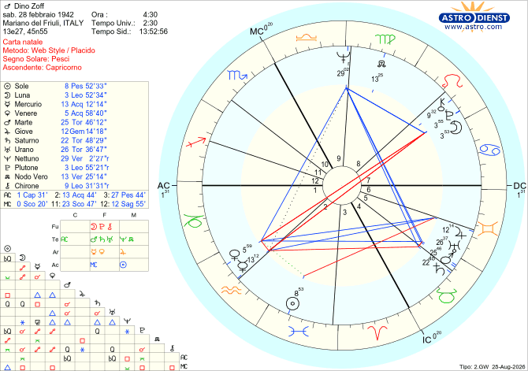

Biografie
Dino Zoff
Tema natale e analisi astrologica secondo il metodo morpurghiano
NATO A MARIANO DEL FRIULI (ITALIA)
IL 28/02/1942 ALLE ORE 04:30
Pesci Ascendente Capricorno

Quando pensiamo a Dino Zoff, la prima immagine che ci viene in mente è quella di un gigante silenzioso: un atleta che è stato capace di attraversare l'epoca dello spettacolo calcistico restando fedele a una sobrietà d'altri tempi. In lui non c'è mai stato nulla della spettacolarizzazione contemporanea. È l'intreccio tra la sua IX e la sua V Casa, unite da un bel trigono, a spiegarci il segreto di questo carisma. La IX Casa è il settore dei grandi orizzonti e della filosofia, ma anche la sede delle convinzioni profonde e dei principi morali che guidano la vita. Qui si colloca Nettuno in Vergine, che trasforma il lavoro e la tecnica in un vero codice etico. Con il suo significato di fede e misticismo, Nettuno sacralizza la regola: per Zoff la dedizione al lavoro, la disciplina tattica e la perfezione del gesto tecnico non erano semplici doveri professionali, ma una religione laica, un ideale da raggiungere per stare in pace con sé stessi. Il lavoro, per lui, non era una fatica ma l'unico modo legittimo per elevarsi. Nella sua autobiografia si definisce con orgoglio un "operaio specializzato": un uomo per cui l'aspirazione più alta (Nettuno) non era diventare una star effimera, ma elevare la maestria artigianale del quotidiano (Vergine) a codice etico d'eccellenza (IX Casa).
Questo ideale dell'operaio non era una suggestione astratta, ma la realtà concreta della sua giovinezza. Dopo tre anni alla scuola di avviamento professionale come motorista, tra i 15 e i 16 anni Zoff comincia a lavorare come aiuto meccanico, prima a Cormons e poi a Gorizia. Ogni giorno percorre in bicicletta 28 chilometri tra andata e ritorno, senza mai saltare un allenamento. In questa quotidianità dura emergono con chiarezza i valori capricornici del suo Tema Natale: un forte senso del dovere, la capacità di sostenere sacrifici enormi senza lamentarsi e una grande resistenza alla fatica fisica. Questo codice etico, temprato dalla fatica di ogni giorno, era del resto scritto nel suo DNA fin dall'infanzia. In astrologia la IV Casa rappresenta la famiglia d'origine e le radici profonde: la presenza del Toro e di un Saturno solido in questo settore spiega bene la natura concreta e responsabile dell'impronta familiare.
Per Dino Zoff la famiglia è stata una vera scuola di vita, fondata su due pilastri:
- L'assunzione di responsabilità senza alibi: emblematico il ricordo del dialogo con il padre dopo un gol subito a sorpresa. Alla lamentela del giovane Dino, il padre rispose con gelida concretezza: «Perché non te l'aspettavi? Era un tiro. E tu stavi lì a fare il portiere, mica il farmacista». Un monito che non lasciava spazio a giustificazioni: il dovere si compie senza scuse.
- Il rispetto per la natura e la vita: la Quarta Casa in Toro trasmette un legame viscerale con la terra e le sue creature. Zoff racconta che da ragazzo abbatté per noia una tortora; vedendo l'animale agonizzante e la rabbia del padre, ricevette una lezione severa: «Gli animali che fanno del bene non vanno toccati per nessuna ragione. È stupido e anche poco dignitoso».
Allo stesso modo, il padre si infuriava di fronte a una pianta rovinata, considerandola fonte sacra di vita.
Questa etica familiare — fatta di senso del dovere, essenzialità e rispetto della natura — ha plasmato l'uomo prima ancora dell'atleta, offrendo a quel Nettuno in IX Casa le radici concrete su cui costruire un'intera vita di sobrietà e integrità professionale.
Ma la fede nella tecnica ha bisogno di un corpo per incarnarsi. Qui entra in gioco il trigono con la V Casa, tradizionalmente associata all'agonismo e all'espressività, ma che per noi morpurghiani rappresenta anche il settore dei "massimi volumi" e degli eccessi. La Quinta Casa di Zoff ospita una potente tripla congiunzione: Saturno, Marte e Urano. Va precisato che Saturno è congiunto alla cuspide della V Casa, ma si trova ancora in IV Casa.
Cosa significa, in concreto, avere tre pianeti così pesanti riuniti nella casa dell'agonismo?
Questa combinazione produce un fenomeno astrologico di rara nitidezza: la ricostituzione virtuale dell'archetipo del Capricorno. Saturno infatti ha nel Capricorno il suo domicilio primario, Urano il suo domicilio base, e Marte vi trova la sua esaltazione. La Quinta Casa viene così invasa da un'ossatura caratteriale d'acciaio, tipica del Capricorno. Trovandosi nel settore degli eccessi, questa configurazione non si traduce nei consueti eccessi edonistici o teatrali dello sport spettacolo, ma nell'eccesso opposto: iper-serietà, concentrazione estrema e un'autodisciplina che annulla in partenza ogni tentazione divistica.
Questa combinazione si esprime con una potenza fuori dal comune perché l'Ascendente di Zoff si trova proprio in Capricorno, e occupa quasi tutta la Prima Casa: è dunque il suo stesso "Io" a esserne coinvolto in prima persona. A rafforzare ulteriormente la resistenza alla fatica e l'attaccamento alla concretezza è il segno del Toro, in cui questa combinazione astrologica è posizionata. Allo stesso tempo, il Toro ammorbidisce la spigolosità capricornica: impedisce al rigore saturnino di sfociare nel cinismo e infonde a Zoff pazienza, umanità e un viscerale istinto di difesa del territorio. Per un portiere, l'area di rigore è la zolla di terra da perimetrare e proteggere dagli invasori: un confine da presidiare con serenità incrollabile. In questo, il Toro è un vero maestro: la difesa del proprio territorio gli appartiene per natura.
Ma la tenacia difensiva da sola non basta a spiegare i riflessi fulminei che lo hanno reso leggendario. Per questo bisogna guardare più da vicino al cuore energetico di questa combinazione.
La congiunzione tra Marte e Urano si manifesta come la perfezione della coordinazione neuro-muscolare. Urano porta prontezza di riflessi e coordinazione a Marte (i muscoli), che fornisce forza esplosiva, dinamismo e tonicità. Nel momento decisivo, Zoff sapeva rispondere con precisione istantanea e felina. La congiunzione Saturno/Marte, invece, dona grande capacità di concentrazione, utile per restare sempre pronti ad agire. E si sa quanto sia difficile, per un portiere, mantenere la concentrazione: a differenza degli altri ruoli, i tempi morti possono essere lunghissimi e generare distrazione.
Resta un ultimo tassello da ricomporre: come si tiene insieme questa formidabile macchina fisica con la sofisticata etica del lavoro descritta all'inizio?
A unire le due case interviene il trigono che collega Nettuno in Vergine in IX Casa al blocco Saturno-Marte-Urano in Toro in V Casa. Questo aspetto fluido è il ponte che permette al mito di incarnarsi nel gesto atletico: la fede nella regola e l'ideale di perfezione non restano teoria astratta, ma si scaricano tra i pali e sulla terra del campo da gioco.
Tutti gli elementi fin qui analizzati — dalla disciplina etica della IX Casa alla spinta territoriale e neuromuscolare della V in Toro — descrivono la struttura fisica, tecnica e morale dell'atleta. Ma resta una domanda più intima: cosa ha spinto davvero Dino Zoff a sentirsi a proprio agio nell'isolamento della porta?
La risposta arriva dall'analisi del Tema Natale. Zoff è un Pesci con Ascendente e Prima Casa in Capricorno: due segni che condividono l'amore per la solitudine, anche se per motivi diversi. Il Capricorno è il segno più indipendente e silenzioso dello zodiaco; i Pesci, invece, hanno bisogno ogni tanto di "fuggire" dal mondo per ricaricarsi, dopo aver assorbito le emozioni altrui. Ma Zoff non è un solitario puro: ama profondamente la dimensione di squadra e il piacere di condividere un obiettivo comune. Ne è conferma la congiunzione Venere/Mercurio in Acquario, segno della cooperazione e dell'appartenenza a un ideale collettivo. L'Acquario, tuttavia, vive la socialità attraverso un filtro mentale e razionale: non è un segno sentimentale, ama la libertà e l'autonomia. Questa congiunzione si traduce quindi in una presenza partecipe ma rigorosamente distinta.
L'aspetto che incide di più, e che probabilmente è stato determinante nel farlo sentire a suo agio nel ruolo di portiere, è l'opposizione di Venere alla strettissima congiunzione Luna/Plutone in Leone e in VII Casa. Il Leone è l'archetipo che cerca centralità e riconoscimento; ma quando la Luna si unisce a Plutone, questa spinta non si traduce nel desiderio di esibirsi. Al contrario, la congiunzione Luna/Plutone custodisce un mondo emotivo denso e viscerale, che sente il bisogno assoluto di non rivelare mai la propria vulnerabilità: mostrare un'emozione in pubblico, o crollare sotto la pressione, significherebbe per questa Luna leonina perdere la propria regalità. L'opposizione di Venere in Acquario fa il resto, spezzando alla radice ogni tentazione di teatralità o ricerca di approvazione. Di fronte al rischio della sovraesposizione emotiva — sia essa l'onda delle proprie passioni interne, sia il contagio delle tensioni dello stadio — questa configurazione trasforma quel magma interiore in una maschera di composta eleganza.
Dino Zoff ha scelto la porta perché era l'unico luogo capace di conciliare il desiderio di mettersi al servizio del gruppo (Venere congiunta a Mercurio in Acquario), la tenacia nel difendere il proprio territorio (Saturno/Marte in Toro) e il bisogno di custodire il proprio mondo emotivo dietro il silenzio del Capricorno e l'orgogliosa inviolabilità di Luna/Plutone in Leone.
Se la struttura emotiva e caratteriale era quella giusta per affrontare la solitudine del ruolo, abbiamo però rischiato di non avere questo campione per motivi legati alla crescita fisica. Fin da ragazzino, infatti, il giovane Dino coltiva la passione per la porta, ma il suo corpo non risponde alle richieste di una disciplina che esige imponenza e copertura degli spazi.
Astrologicamente, questa situazione è ben rappresentata dal Sole in Pesci in II Casa in quadratura a Giove in Gemelli in VI Casa. Il Sole rappresenta l'Io ed è collocato nella Seconda Casa, che governa l'assimilazione nutrizionale; qui riceve una lesione da Giove, pianeta dell'espansione, in VI Casa. La Sesta Casa è il settore legato al corpo, al metabolismo e alla salute quotidiana; Giove si trova nel segno dei Gemelli, archetipo dell'adolescenza. Questa configurazione crea una vera strozzatura evolutiva: la crescita fisica di Dino rallenta proprio nel momento cruciale dello sviluppo pre-adolescenziale. I provini con Inter e Juventus si trasformano in porte sbarrate; il verdetto dei tecnici è impietoso e identico: "Il ragazzo è troppo piccolo".
Fortunatamente, nel grafico astrale di Zoff esiste una via di fuga: un ponte armonico che ribalta il destino di quel blocco. Sulla cuspide della Seconda Casa, in Acquario, risplende Mercurio che forma un trigono potente, quasi perfetto al grado, con Giove in Gemelli in Sesta Casa — potente perché Mercurio è il dispositore di Giove, essendo il pianeta che governa il segno dei Gemelli.
Questo trigono sblocca l'energia di Giove e la traduce in un'azione concreta e quotidiana. Nella vita reale di Dino, questo aspetto prende il volto di Nonna Adelaide. Osservando quel nipote determinato ma penalizzato dalla statura, la nonna non si perde d'animo: decide di intervenire sulla sua alimentazione con una certezza incrollabile. Ogni mattina impone a Dino una cura ricostituente — due tuorli d'uovo freschi a colazione, seguiti al pomeriggio da sostanziose frittate.
Non si tratta solo di proteine ed energia, ma della trasmissione quotidiana di una fiducia che riflette l'aspetto positivo di Mercurio/Giove, unita alla consapevolezza di essere nutrito con amore (Venere in Prima Casa congiunta a Mercurio in Seconda). Probabilmente questa iniezione di ottimismo quotidiano agì quasi in modo psicosomatico sulla costituzione del giovane portiere: nel giro di un paio d'anni, Dino ebbe uno scatto di crescita prodigioso, guadagnando circa 15 centimetri fino a superare il metro e ottanta.
Ma l'influenza della famiglia andò oltre le proteine delle uova: fu una vera iniezione di fiducia quotidiana. Tra le prugne lanciate nell'aia dalla nonna Adelaide — da afferrare al volo perché "nulla va sprecato" in una famiglia contadina — e quel numero 1 rosso ricamato a mano dalla mamma sulla canottiera, la famiglia trasformò la carenza di statura in una costruzione quotidiana della sicurezza. In quelle sessioni casalinghe, Dino non allenava solo i riflessi e la presa sul corto: assorbiva la certezza di essere pronto a tutto. Fu questa fiducia in sé stesso a portarlo alla carriera leggendaria che tutti conosciamo.
Tra gli episodi più eclatanti:
- I 1142 minuti consecutivi senza subire gol tra il 1972 e il 1974, un record rimasto imbattuto per decenni.
- Aver vinto un Mondiale da capitano a 40 anni, un traguardo che nessun altro giocatore "over 40" ha eguagliato allo stesso livello di responsabilità e pressione (finale di Spagna '82 contro la Germania).
- Presidente della Lazio (1994-98).
- Allenatore della Juventus (1988-90), esonerato nonostante il double Coppa UEFA-Coppa Italia.
Eppure, persino una carriera così limpida ha dovuto attraversare la sua ombra più scura. Non fu il ritiro dal calcio giocato, annunciato con naturalezza nel 1983 — subito dopo la vittoria dei Mondiali in Spagna — con la celebre frase "Non posso parare l'età". A ferirlo nel profondo fu, nel 2000, la decisione di dimettersi da CT della Nazionale dopo le dure accuse di Silvio Berlusconi.
Per comprendere questo gesto bisogna risalire a Euro 2000. L'Italia era rimasta in vantaggio fino quasi alla fine, ma ai supplementari con la Francia perse per un golden gol di Trezeguet. Il giorno dopo, mentre la squadra era in volo di ritorno dall'Olanda, Berlusconi — all'epoca presidente del Milan e presidente del Consiglio — criticò duramente Zoff in conferenza stampa, sostenendo che "da Zoff sono arrivate scelte indegne" e che la mancata marcatura a uomo su Zidane sarebbe stata evidente "anche a un dilettante".
Non fu l'unico attacco denigratorio subito da Zoff. Questo tipo di ferita affondava le radici già negli anni della giovinezza all'Udinese, quando un suo allenatore si spinse fino al suo paese natio per calunniarlo e sminuirne il valore.
Astrologicamente, queste esperienze si specchiano con precisione nella quadratura tra il Sole in Pesci in II Casa e Giove in Gemelli in VI Casa. Il Sole in II Casa rappresenta il senso del proprio valore personale; trovandosi nei Pesci, dona una sensibilità profonda e un'estrema suscettibilità di fronte alla critica ingiusta. La Sesta Casa è il settore del lavoro quotidiano, mentre i Gemelli spesso indicano pettegolezzi e superficialità: Giove leso in questo contesto si presta al significato di "parola che calunnia", trasformando l'ambiente lavorativo nel teatro di una provocazione che ferisce nel profondo.
L'attacco al valore personale fa entrare in gioco l'orgoglio ferito della congiunzione Luna-Plutone in Leone. Per una struttura interiore così dominata dal bisogno di dignità e dalla consapevolezza di dare sempre il massimo, la delegittimazione morale non è una semplice divergenza d'opinioni: è un'offesa che brucia in profondità. La reazione di Zoff, però, non sfocia mai nella polemica mediatica. Di fronte alla calunnia, l'atleta attiva il rifugio più naturale della sua mappa astrale: il ritiro e il silenzio. Guidato dalla compostezza dei suoi valori capricornici e da quelli pacifici del Toro, che ama creare attorno a sé un ambiente sereno, Zoff sceglie di fare un passo indietro, chiudendosi in una riservatezza dignitosa: preferisce rinunciare alle cariche piuttosto che piegare la propria integrità di fronte al giudizio altrui.
Prima di chiudere questa analisi, resta da sciogliere un ultimo enigma astrologico: come può un Sole in un segno d'Acqua come i Pesci esprimersi e respirare all'interno di una struttura dominata da una così imponente sovrastruttura di Terra? Com'è possibile che la sensibilità sfumata, l'intuizione e l'anelito all'infinito dei Pesci non siano stati soffocati dalla concretezza contadina del Toro e dal rigore stoico del Capricorno?
La risposta arriva, con disarmante semplicità, dalle parole dello stesso Zoff nella sua autobiografia. Ricordando gli anni della giovinezza, Dino confessa che, se il calcio non fosse diventato la sua vita, avrebbe fatto il meccanico, ma "sognando di fare il pilota".
Quel semplice verbo — sognando — è la firma luminosa del suo Sole in Pesci: un segno d'Acqua che non rinuncia mai al sogno, neanche con le mani sporche di grasso d'officina e i piedi piantati sulla terra battuta. La componente di Terra gli imponeva il realismo del mestiere, l'umiltà della gavetta, il contatto con la materia — i motori, le chiavi inglesi, la bicicletta — ma l'anima dei Pesci trasformava quella materia in una rampa di lancio per l'immaginazione. Zoff non sognava un lavoro comune né la routine della massa: sognava la velocità pura, il rombo del motore spinto al limite, la sfida ai propri riflessi su un circuito — lo stesso brivido di controllo e rischio calcolato che poi avrebbe ritrovato, in altra forma, tra i pali.
È la magia di un Sole in Pesci che, anche nei terreni meno adatti, sa esprimersi sempre con straordinaria forza. Il segno in cui risiede il Sole rappresenta il nucleo dell'Io e non si lascia mai soffocare del tutto: in un modo o nell'altro si fa sempre sentire, persino quando l'architettura complessiva del Tema Natale sembra remare in direzione opposta.
Questa è la storia di un uomo che ha fatto del silenzio la sua lingua e della disciplina la sua unica forma di ribellione. Dietro ogni parata all'apparenza semplice, dietro ogni sacrificio compiuto senza un lamento, c'era sempre — intatto — quel ragazzo con le mani sporche di grasso d'officina che sognava la velocità di un circuito. Zoff non ha mai smesso di sognare: ha solo imparato a farlo con i piedi piantati a terra, tra i pali, senza bisogno che nessuno se ne accorgesse.